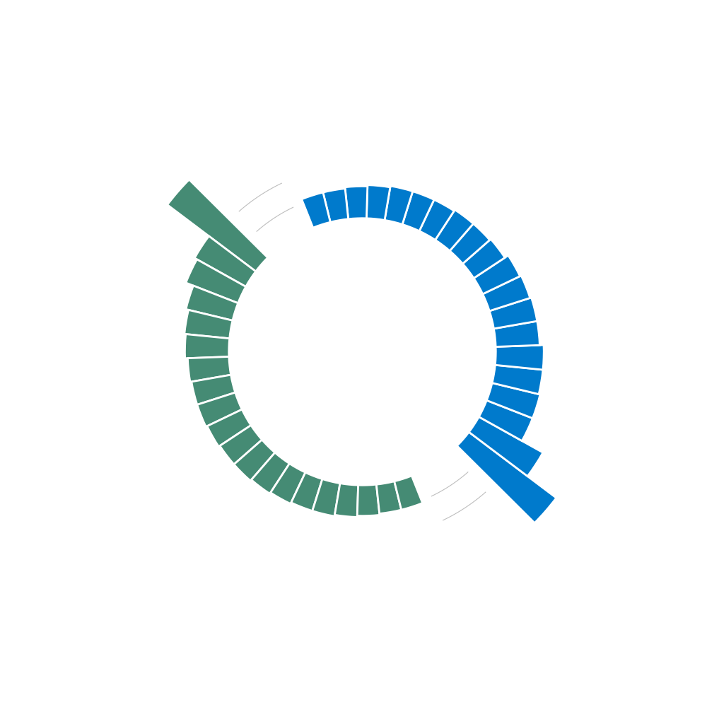
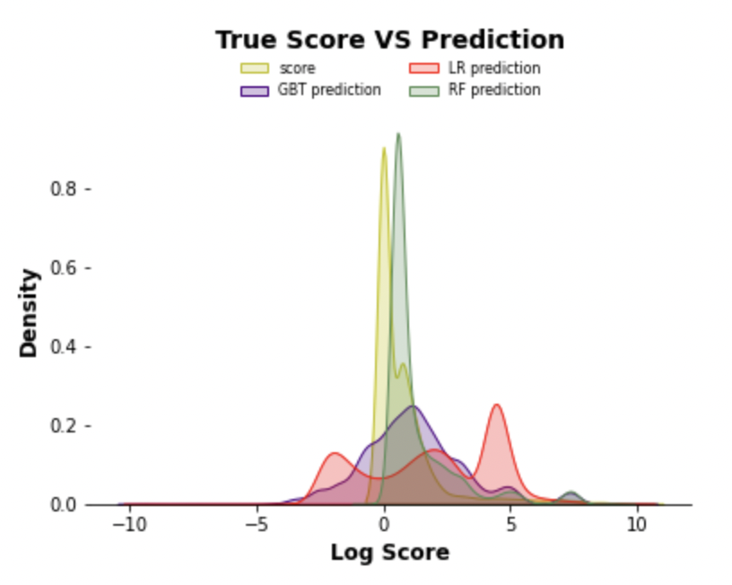

In the early stage of the project, our team presents various visualizations of the Reddit data. Including top games being discussed in Reddit, the sensitive content percentage, user busy time, etc. Visualization helps our team resolve some of our business goals. We specified the target game we will focus on for the rest of the project and explored the relationship between these games and other social media (youtube). The visualization shows that users respond to posts between 3 PM and 8 PM, and the post's creation time does not affect its score.
We performed data transformation and analysis using natural language processing. We create two new variables using regular expressions according to the post's content. Our team found that users in the League subreddit tend to discuss esports, but Minecrafters in Reddit are more interested in the game content. Sentiment analysis was utilized to determine the user's attitude toward specific subjects on different subreddits. We found that users who care about league esports are intimidated by Asian divisions, and the witch is the most mentioned monster by Minecrafters on Reddit.
Figure1: The top 20 most common words on League of Legends and Minecraft subreddits.
In the machine learning section, our team attempts to develop algorithms that can based on a post’s content to predict its subreddit. This could allow automatic recommendations when users create a new post. In order to make machines understand human works, we used two methods: word embedding and one-hot encoding. We trained two models, one is a linear model: logistic regression, and a deep neural network: LSTM. Based on the performance matrix (AUC score, accuracy), LSTM outperformed the logistic regression, and have about 97% accuracy on distinguishing posts from either LeagueofLegends subreddit or Minecraft subreddit.
All posts on the platform are sorted according to the submission score, representing the number of upvotes minus the number of downvotes. The next goal of our team in the machine learning section is to apply different models to predict the score that posts will receive. Our team first fit a linear regression model to establish a baseline. Then, two other models (Gradient-Boosted Trees and random forest) are performed on the training set. We compare the models based on three metrics: R-Squared, MAE, and RMSE. The predictions of the second model (Gradient-Boosted Trees) are more accurate than linear regression but still need improvement. Overall, the random forest model has the best performance since it has the lowest error and highest R-square.
Figure2: Comparison density plot of results of three regression models and actual score
Until now, this project has explored Exploratory Data Analysis, Natural Language Processing, and Machine Learning parts of Minecraft and League of Legends. Next step, our team will collect more data, including more genres, not only online games (League of Legends) and console games (Minecraft), such as mobile games, PC games, and social gaming. We decided to pop up more business-related questions based on Reddit data and find more interests posts. Also, until now, most data are coming from the Reddit website, and the resources could be more extensive. We decided to use not only Youtube API data but also explore more Twitter data, Tiktok, Etc. Using these data, our group can perform different models to do Natural Language Processing, such as self-design Bert and sentiment analysis for different data channels. Our group will also perform clustering to classify different category players. We can also predict the number of users, the sentiment trend, Etc. Please pay attention to our future work.